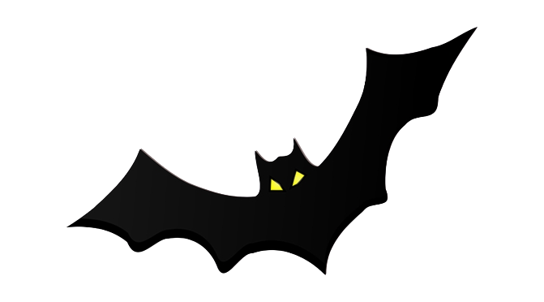

Howdy! I am junior Computer Science student at Texas A&M, minoring in cybersecurity.
In my free time, I like to read, play video games, or exercise.
After graduating, I would like to have a career in cybersecurity, since that is a big passion of mine.
I've been a member of the
cybersecurity club here at A&M since my freshman year, and I have several projects and certifications
in this field that will definitely help me achieve my goal.
In the past two summers, I gained a solid understanding of basic cybersecurity fundamentals by
completing several certifications such as the Google Cybersecurity certification and CompTIA Security+.
These certifications helped me learn how to perform security audits, analyze security logs,
set up networks/firewalls, use the Linux command line, respond to security incidents, and more.
Now that I am coming close to completing this website, I've become really interested in front-end development.
While it wouldn't suit me to pursue a front-end career, I think that it would be a nice hobby,
as I really enjoyed creating this website (especially the
Arcade part). I think that this project was really effective in introducing HTML, CSS, and Javascript,
as I have only created one
website prior to this using a GUI and template.
Talking about previous projects, I have a couple where I designed some games.
As you can tell from Arcade Mode, I think that incorportating games into learning makes the whole process
more enjoyable and fruitful by keeping you engaged while conveying important information.
One game category that employs this technique is cybersecurity
capture the flag.
If you would like to learn more,
OverTheWire provides free access from beginner to expert level
wargames.
Something I would like to do in the future is to help out other students who are interested in cybersecurity.
One way that I could do this is by creating a website similar to OverTheWire for easy access. Other websites that I have
found helpful and would like to recreate (with free access!) are
HackTheBox and
TryHackMe
However, these projects are probably far into the future.
Currently, one way that I give back to my community is by buying merchandise, e.g.,
buying clothes from the A&M Bookstore.
Proceed with password